Кадры, которые невозможно снять на камеру
Творческая команда и AI-продакшен полного цикла. Музыкальные клипы и визуал для артистов с постановкой, светом и масштабом большого кино.

Творческая команда и AI-продакшен полного цикла. Музыкальные клипы и визуал для артистов с постановкой, светом и масштабом большого кино.
Фрагменты из наших генераций, замедленные. Без звука.
01 — Сцены
Контровое солнце, длинные тени, медленный проход камеры по тропе.
Хребет складывается в силуэт медведя — кадр, который не найти ни в одной локации.
Тёплая палитра плёнки, мягкий фокус и ветер, который видно в каждом лепестке.
Туман над ущельем медленно принимает форму зверя и снова растворяется.
Северное сияние в технике бумажной аппликации: фактура, слои, глубина.
Глаз кита сквозь толщу льда — масштаб, которого нет у живой съёмки.
02 — Подход
Сценарий, герои, ритм и вкус — решения творческой команды. AI-продакшен не придумывает клип за нас, а воплощает задуманное.
Свет, камера, композиция и цвет выстраиваются так же, как на съёмочной площадке.
Северное сияние, кит подо льдом, гора-медведь — то, что невозможно снять, становится возможным.
03 — Процесс
Слушаем песню, изучаем артиста, предлагаем историю.
Раскадровка под музыку: весь фильм виден до первого кадра.
Герои, миры и липсинк. Сотни ИИ-генераций, в фильм попадают лучшие.
Склейки в долю, цветокоррекция, титры, вертикальные версии.
04 — Контакты
© 2026 AKM StudiosAI Cinema & Music Video Production